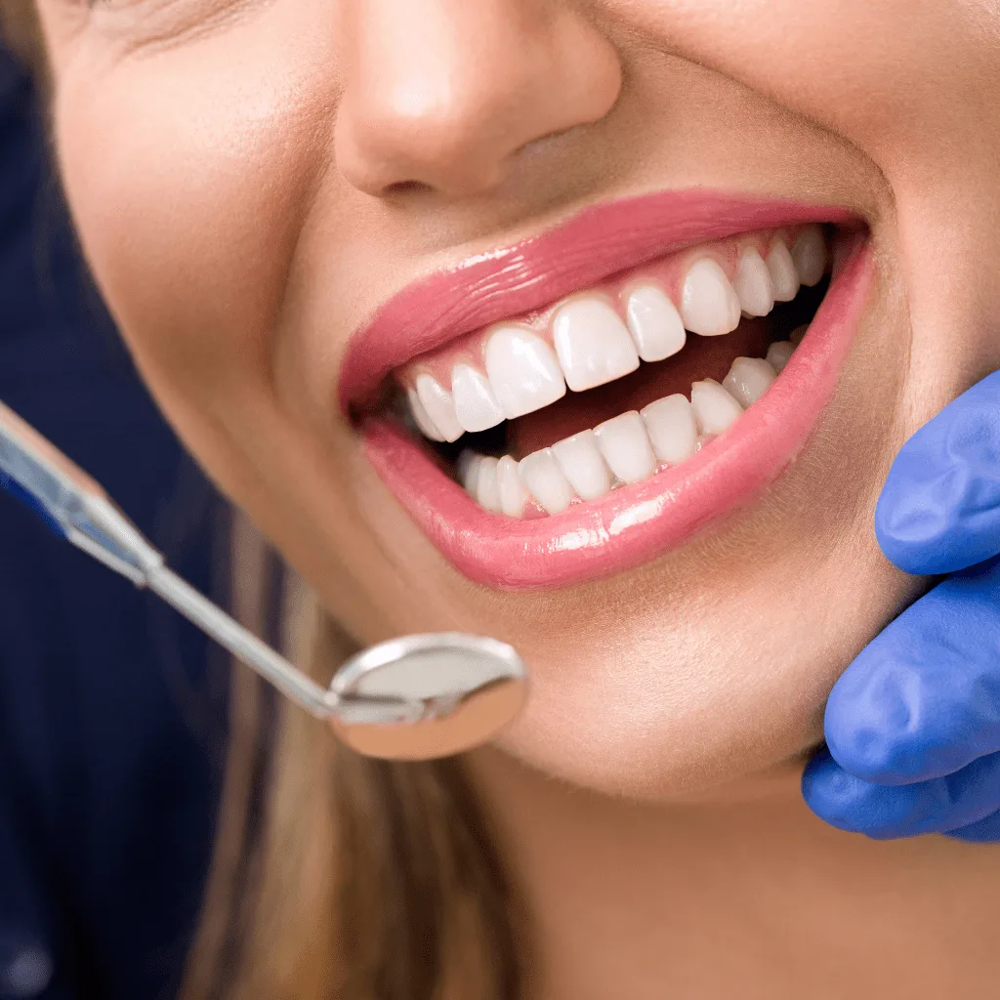
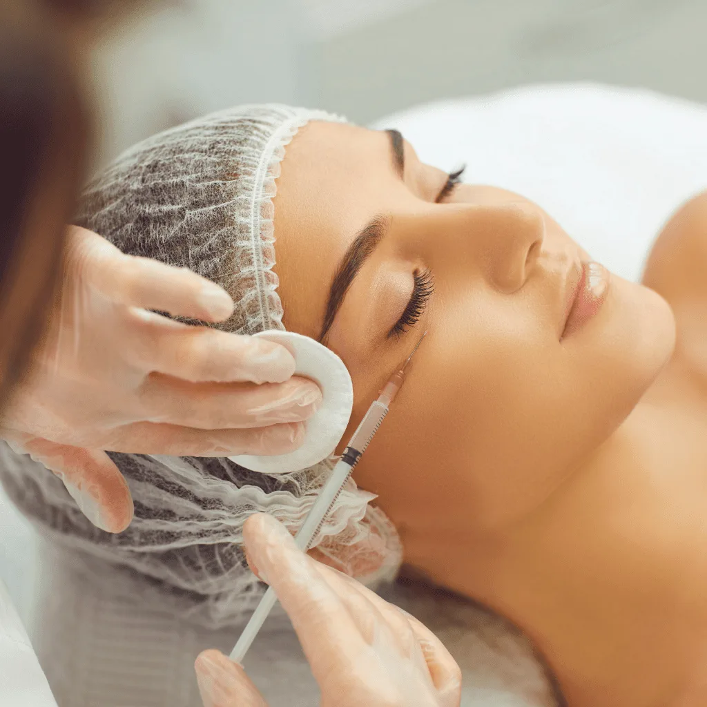
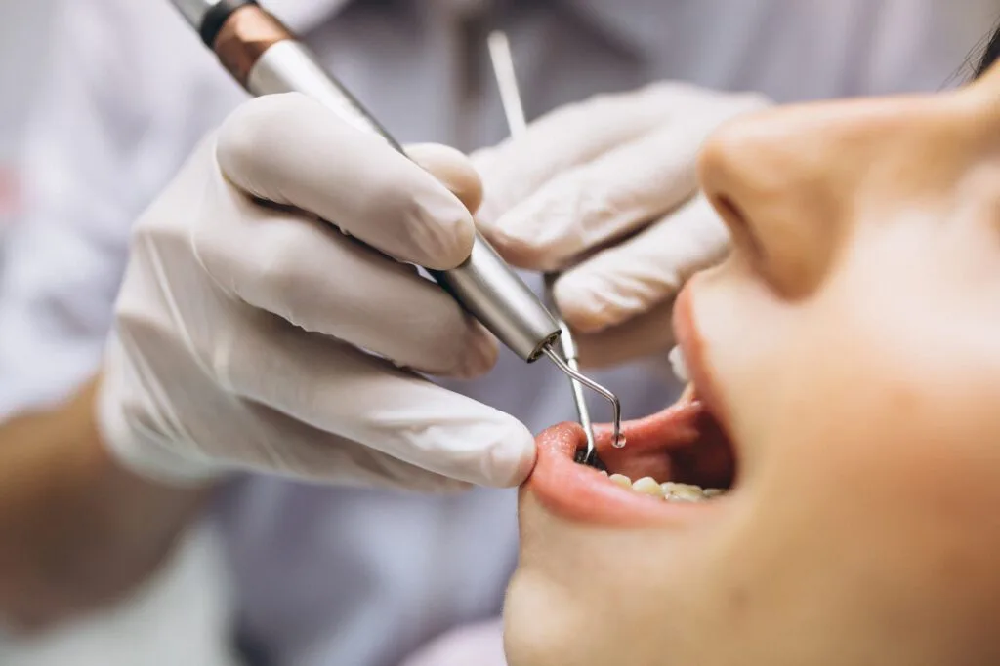
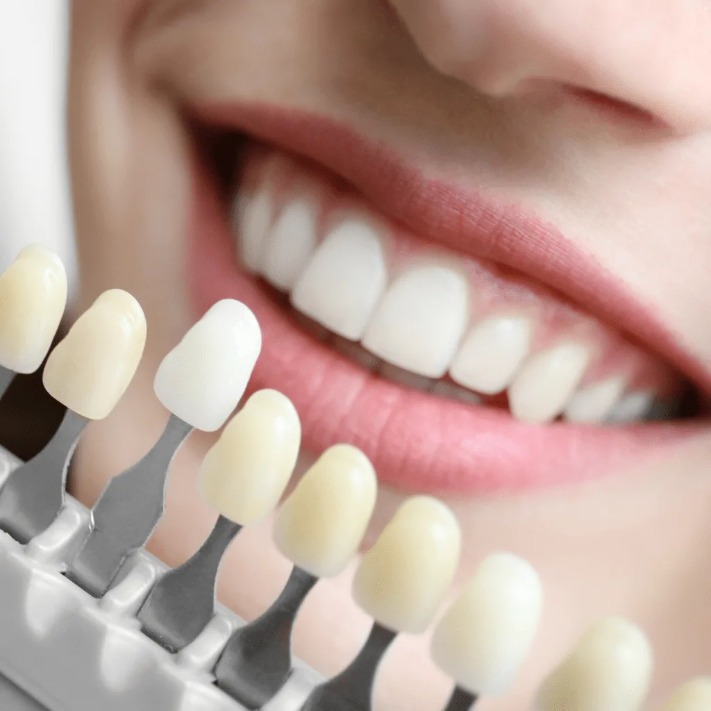

01Imagem ilustrativa
Reabilitação oral
Implante dentário
Repõe a raiz de um dente perdido e sustenta a prótese que devolve forma e função ao sorriso.
Entenda o tratamentoConheça as sete áreas de atendimento da Maison e entenda as possibilidades para o seu sorriso.
Agendar minha consultaSelecione uma área para descobrir os tratamentos disponíveis na Maison.
Sem cadastro e sem diagnóstico automático. A indicação de qualquer tratamento depende de avaliação odontológica.
REABILITAÇÃO
Essas opções são apenas informativas, não constituem indicação clínica.
Informações claras sobre procedimentos, cuidados e formas de agendar uma avaliação na Maison.
Escolha uma área para conhecer os tratamentos e decidir o próximo passo com mais informação.
 Imagem ilustrativa
Imagem ilustrativaImplantes e próteses são possibilidades diferentes para substituir dentes perdidos. Conheça como cada tratamento é avaliado e converse com a equipe sobre seu caso.

Imagem ilustrativaAlinhadores transparentes podem ser uma alternativa ortodôntica. A avaliação profissional considera a posição dos dentes, a saúde bucal e as possibilidades de tratamento.
Lentes de contato dentais e clareamento atendem objetivos diferentes. Conheça as possibilidades, os cuidados e as limitações antes de decidir junto ao profissional.

Imagem ilustrativaCirurgia dentária e harmonização facial envolvem indicações e planejamentos distintos. Entenda o atendimento e converse com a equipe sobre uma avaliação individual.
Explore as sete áreas da Maison e aprofunde-se no que deseja conhecer.
Repõe a raiz de um dente perdido e sustenta a prótese que devolve forma e função ao sorriso.
Entenda o tratamento02Imagem ilustrativaSoluções fixas ou removíveis para repor dentes e ajudar na mastigação, na fala e na estética.
Entenda o tratamentoAlinhadores transparentes e removíveis que movimentam os dentes com acompanhamento ortodôntico.
Entenda o tratamentoLâminas finas sobre a frente dos dentes para planejar mudanças de cor, forma e proporção.
Entenda o tratamento
05Imagem ilustrativaProcedimentos como extrações, com avaliação, planejamento e orientações para a recuperação.
Entenda o tratamento
06Imagem ilustrativaTratamento para clarear dentes naturais, no consultório ou em casa com supervisão profissional.
Entenda o tratamentoPlanejamento estético das proporções do rosto, com técnicas escolhidas para os seus objetivos.
Entenda o tratamentoConverse com a equipe da Maison e saiba como agendar sua avaliação. A escolha do tratamento é feita após análise profissional.
Conversar pelo WhatsAppAtendimento pelos planos Life Empresarial Saúde, MetLife, INPAO Dental, Rede Odonto Empresas e Amil.
Consultar meu plano


Prefere conversar? A equipe da Maison recebe sua mensagem diretamente.
Falar com a equipeNão. Na consulta, a equipe avalia a saúde bucal e apresenta as alternativas de acordo com suas necessidades.
A clínica oferece a possibilidade de sedação consciente em tratamentos com implantes, conforme avaliação profissional.
Agende sua consulta na Asa Sul. A equipe da Maison está pronta para receber você.